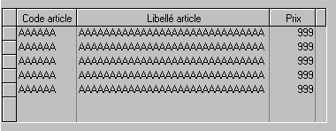

L'objet tableau (basé sur l'objet « Datagrid » de Microsoft) est particulièrement puissant. Il permet de gérer de manière simple toute présentation sous forme de liste comme par exemple la liste des enregistrements d'un fichier, les lignes détail d'une facture etc.
Les Zooms d'Harmony sont basés sur l'utilisation de cet objet.
Exemple :

L'objet tableau contient une liste de colonnes. Une colonne peut être un objet "Champ", "Multi-choix", "Case à cocher", "Bitmap variable", "Arbre", "Graphique".
La taille et la position des colonnes peuvent être modifiées par l'utilisateur en cours d'utilisation du programme. Le développeur peut aussi autoriser l'utilisateur à choisir les colonnes du tableau qu'il veut voir affichées. La liste des colonnes à afficher ainsi que les modifications de position ou de taille sont enregistrées de telle sorte que l'utilisateur retrouve la présentation du tableau lors d'une utilisation ultérieure.
Grâce aux attachements, la taille du tableau peut être agrandie lorsque l'utilisateur agrandit ou maximise la fenêtre Windows. Ceci permet d'afficher à l'écran un maximum de colonnes et de lignes.